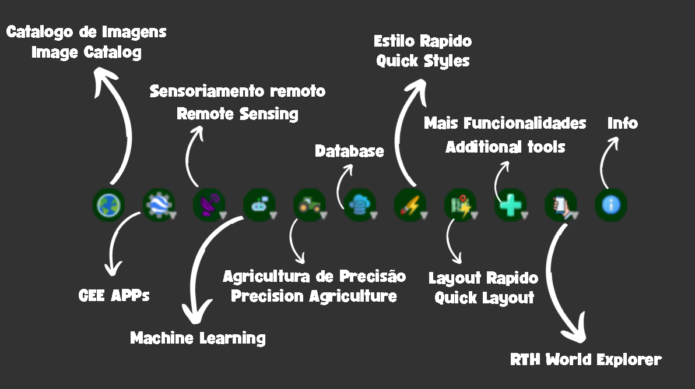

← Projetos
RTH PROJECT — Plugin QGIS para Mapeamento Agrícola & ESG
Plugin open-source para QGIS que centraliza ferramentas de sensoriamento remoto e mapeamento agrícola em um único ambiente. Do catálogo de imagens via STAC ao planejador de voo para drones, cada módulo foi desenvolvido para otimizar o fluxo de trabalho do profissional de geotecnologias no agronegócio — disponível gratuitamente no repositório oficial do QGIS.
Link do Projeto: Acesse aqui
